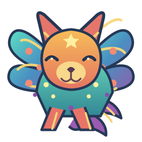
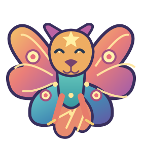
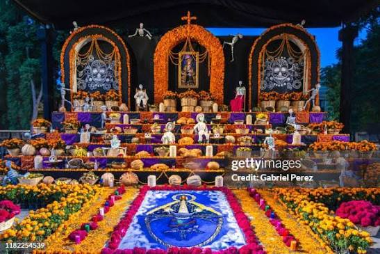

Recordar es volver a vivir
Celebramos nuestras raíces, honramos nuestras tradiciones y recordamos con cariño a quienes siempre estarán en nuestro corazón.
Descubrir la ofrenda ↓Enciende una luz, comparte un recuerdo
Arma este pequeño altar y dedica su luz a alguien especial.
El puente de cempasúchil
Un sendero de flores que une dos mundos y guía a quienes vuelven a casa.


Los alebrijes esperan para acompañarte.
Galería de recuerdos
Cada recuerdo conserva una historia especial.

Siempre en nuestro corazón
Imagen 1 de 4
Usa las flechas para elegir una foto y luego pulsa “Cambiar esta foto”.
✨ Elementos de nuestra ofrenda ✨
Pulsa cada tarjeta para conocer su significado.
Selecciona un elemento para descubrir su significado.
🕯️ El reto de la ofrenda
Responde las preguntas y descubre cuánto sabes sobre esta hermosa tradición mexicana.
¿Qué flor se utiliza tradicionalmente en la ofrenda?
Elige una respuesta para continuar.
¡Reto completado!
Mientras haya recuerdos, vivirán en nosotros.
Honremos nuestras tradiciones y mantengamos viva la memoria de quienes dejaron huella en nuestra vida.